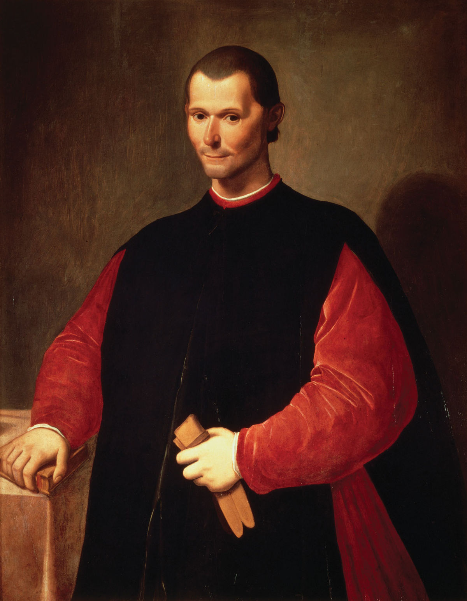

| Inicio | Politica | El Príncipe | Contacto | |
| MAQUIAVELO | ||||
BiografiaSu vida podría ser dividida en tres periodos; cada uno de ellos representa en sí mismo la historia de Florencia. Su juventud coincidió con la grandeza de Florencia como potencia italiana, bajo el mandato de Lorenzo de Médici. La caída de Girolamo Savonarola en Florencia ocurrió en 1498, el mismo año en el que Maquiavelo se integraba en el servicio público. Durante su carrera como funcionario, ejerce importantes puestos en la Florencia que fue libre bajo el gobierno de una república, la cual duró hasta 1512, cuando los Médici regresaron al poder, y Maquiavelo perdió su puesto. Los Médici gobernaron Florencia desde 1512 hasta 1527, cuando fueron nuevamente retirados del poder. Este fue el período de actividad literaria de Maquiavelo, y también de su creciente influencia; sin embargo, murió a semanas de la expulsión de los Médici, el 21 de junio de 1527, a los cincuenta y ocho años, sin haber recuperado su cargo. juventudunque se tienen pocos registros de su juventud, la Florencia de aquellos días era tan bien conocida que es fácil imaginar el ambiente en el que el joven ciudadano se desenvolvía. Florencia era una ciudad con dos corrientes opuestas, una representada por el austero Girolamo Savonarola y la otra por Lorenzo de Médici, amante del esplendor. Aunque el poder de Savonarola sobre las fortunas florentinas era inmenso, no parece haber sido muy importante para Maquiavelo puesto que solo lo menciona en El Príncipe como un malogrado profeta desarmado. Por otra parte, la magnificencia del mandato de Lorenzo impresionó fuertemente a Maquiavelo, llegando incluso a dedicar El príncipe al nieto de Lorenzo. Maquiavelo fue considerado uno de los grandes escritores en su colegio. Era un escritor muy reconocido que influyó en el humanismo. Servicio CivilEl segundo período de su vida se ubica en el "Período Libre" de Florencia, que va desde la expulsión de Girolamo Savonarola en 1498 cuando Maquiavelo tenía 29 años, y duró hasta el regreso de los Médici (familia que poseía el mayor poder económico en Florencia) en 1512. Después de servir cuatro años en una oficina pública como secretario, fue nombrado canciller y secretario de la Segunda Cancillería. Tomó un rol importante en los asuntos de la república, habiendo quedado sus decretos, sus registros y sus despachos para guiarnos, así como sus propios escritos. Pese a que tuvo posiciones altas en el panorama público y político, él las evitaba ya que aceptaba cualquier tipo de trabajo a cambio de poco |
||||